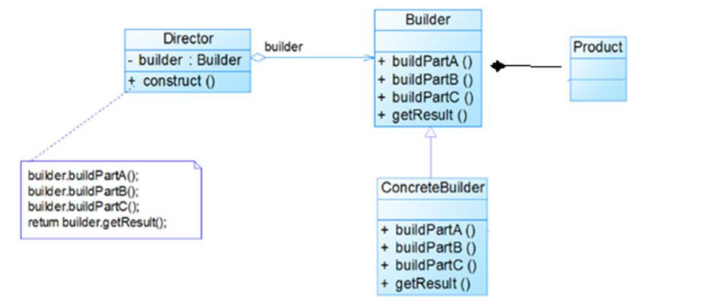

# 建造者模式基本介绍
# 🛹基本介绍
建造者模式（Builder Pattern） 又叫生成器模式，是一种对象构建模式。它可以将复杂对象的建造过程抽象出来（抽象类别），使这个抽象过程的不同实现方法可以构造出不同表现（属性）的对象。
建造者模式 是一步一步创建一个复杂的对象，它允许用户只通过指定复杂对象的类型和内容就可以构建它们， 用户不需要知道内部的具体构建细节。
# 🛴建造者模式的四个角色
Product（产品角色）： 一个具体的产品对象。
Builder（抽象建造者）： 创建一个 Product 对象的各个部件指定的 接口抽象类。
ConcreteBuilder（具体建造者）： 实现接口，构建和装配各个部件。
Director（指挥者）： 构建一个使用 Builder 接口的对象。它主要是用于创建一个复杂的对象。它主要有两个作用，** 一是：** 隔离了客户与对象的生产过程，** 二是：** 负责控制产品对象的生产过程。
# 🚗建造者模式原理类图

# 代码实例
# 🚓需求：
组装电脑，可以组装高配电脑或者低配电脑或者自定义电脑。
# 🛺经典 Buider 模式，对应类的的四个角色：
- 要建造的产品 Product -- 组装的电脑
- 抽象的 Builder -- 装 CPU、内存条、硬盘等抽象的步骤
- Builder 的具体实现 ConcreteBuilder -- 对上述抽象步骤的实现，比如装 i5CPU、8G 内存条、1T 硬盘
- 使用者 Director -- 电脑装机人员
# 🚙产品角色：Computer
/** | |
* @author WangXuefeng | |
* @version 1.0 | |
* @date 2021/6/2 22:53 | |
* @description 电脑 ，相当于产品角色 | |
* | |
* 要建造的产品 Product -- 组装的电脑 | |
* 抽象的 Builder -- 装 CPU、内存条、硬盘等抽象的步骤 | |
* Builder 的具体实现 ConcreteBuilder -- 对上述抽象步骤的实现，比如装 i5CPU、8G 内存条、1T 硬盘 | |
* 使用者 Director -- 电脑装机人员 | |
* 接下来我们来看下用代码如何实现上述组装电脑的过程： | |
* | |
* 1. 首先我们先来创建一个 Computer 类： | |
* | |
* 很简单，可以看到这个 Computer 类中有五个基本属性 CPU、内存条、硬盘、键盘和鼠标，然后还有一个 toString 方法，用于之后方便打印信息用。 | |
*/ | |
@Data | |
public class Computer { | |
/*CPU*/ | |
private String CPU; | |
/* 内存 */ | |
private String memory; | |
/* 硬盘 */ | |
private String hardDisk; | |
/* 键盘 */ | |
private String keyboard; | |
/* 鼠标 */ | |
private String mouse; | |
} |
# 🚌抽象建造者：ComputerConfigBuilder
/** | |
* @author WangXuefeng | |
* @version 1.0 | |
* @date 2021/6/2 22:55 | |
* 经典 Builder 模式 | |
* @description Builder 类 | |
* 2. 接下来我们来创建一个抽象的电脑组装过程的 Builder 类： | |
* | |
* | |
* 电脑组装一般都需要安装 CPU、内存条、硬盘、键盘鼠标等，我们把这一安装过程给抽象出来， | |
* 也就是这里的 ComputerConfigBuilder ， | |
* 至于具体安装什么需要其实现类来实现，另外其中还定义了一个获取 Conputer 的方法。 | |
*/ | |
public interface ComputerConfigBuilder { | |
void setCPU(); | |
void setMemory(); | |
void setHardDisk(); | |
void setKeyboard(); | |
void setMouse(); | |
Computer getComputer(); | |
} |
# 🚐具体建造者：LowConfigBuilder 、HighConfigBuider
/** | |
* @author WangXuefeng | |
* @version 1.0 | |
* @date 2021/6/2 23:02 | |
* @description 实现类 | |
* 接着我们再创建一个高配版的套餐： | |
* <p> | |
* 可以看到这个高配版的配置为：i7 的 CPU、16G 内存、1T 硬盘、机械键盘和无线鼠标。 | |
*/ | |
public class HighConfigBuilder implements ComputerConfigBuilder { | |
private Computer computer; | |
public HighConfigBuilder() { | |
this.computer = new Computer(); | |
} | |
public void setCPU() { | |
computer.setCPU("i7"); | |
} | |
public void setMemory() { | |
computer.setMemory("16G"); | |
} | |
public void setHardDisk() { | |
computer.setHardDisk("1T"); | |
} | |
public void setKeyboard() { | |
computer.setKeyboard("机械键盘"); | |
} | |
public void setMouse() { | |
computer.setMouse("无线鼠标"); | |
} | |
public Computer getComputer() { | |
return computer; | |
} | |
} |
/** | |
* @author WangXuefeng | |
* @version 1.0 | |
* @date 2021/6/2 22:58 | |
* @description 实现类 | |
* 3. 好了，有了抽象的组装过程，接下来我们就需要创建具体的实现类。 | |
* 我们知道电脑一般都有低配版和高配版，不同配置，组装成的电脑自然就不一样。 | |
* 接下我们首先来创建一个低配版的套餐 LowConfigBuilder ，让其实现 ComputerConfigBuilder： | |
* | |
* 可以看到这个低配版的配置为：i5 的 CPU、8G 内存、500G 硬盘、薄膜键盘和有线鼠标。 | |
*/ | |
public class LowConfigBuilder implements ComputerConfigBuilder { | |
private Computer computer; | |
public LowConfigBuilder(){ | |
this.computer = new Computer(); | |
} | |
public void setCPU() { | |
computer.setCPU("i5"); | |
} | |
public void setMemory() { | |
computer.setMemory("8G"); | |
} | |
public void setHardDisk() { | |
computer.setHardDisk("500G"); | |
} | |
public void setKeyboard() { | |
computer.setKeyboard("薄膜键盘"); | |
} | |
public void setMouse() { | |
computer.setMouse("有线鼠标"); | |
} | |
public Computer getComputer() { | |
return computer; | |
} | |
} |
# 🚎指挥者：Director
/** | |
* @author WangXuefeng | |
* @version 1.0 | |
* @date 2021/6/2 23:04 | |
* @description 指挥者 | |
* 4. 上面我们已经定义好了两种配置方案，接下我们还需要一名装机人员 Director： | |
* <p> | |
* 我们需要通过 setBuilder 来告诉他电脑需要什么配置， | |
* 然后就可以通过 createComputer 来一步步组装电脑， | |
* 组装完之后就可以调用 getComputer 方法来获取我们需要的电脑啦。 | |
*/ | |
public class Director { | |
private ComputerConfigBuilder configBuilder; | |
public Director(ComputerConfigBuilder configBuilder) { | |
this.configBuilder = configBuilder; | |
} | |
public void setConfigBuilder(ComputerConfigBuilder configBuilder){ | |
this.configBuilder = configBuilder; | |
} | |
public void builderComputer() { | |
configBuilder.setCPU(); | |
configBuilder.setMemory(); | |
configBuilder.setHardDisk(); | |
configBuilder.setKeyboard(); | |
configBuilder.setMouse(); | |
} | |
public Computer getComputer() { | |
return configBuilder.getComputer(); | |
} | |
} |
# 🚑客户端调用
/** | |
* @author WangXuefeng | |
* @version 1.0 | |
* @date 2021/6/2 23:08 | |
* @description | |
* 经典 Buider 模式中有四个角色： | |
* | |
* 要建造的产品 Product -- 组装的电脑 | |
* 抽象的 Builder -- 装 CPU、内存条、硬盘等抽象的步骤 | |
* Builder 的具体实现 ConcreteBuilder -- 对上述抽象步骤的实现，比如装 i5CPU、8G 内存条、1T 硬盘 | |
* 使用者 Director -- 电脑装机人员 | |
*/ | |
public class BuilderClient { | |
public static void main(String[] args) { | |
// 创建低配电脑 | |
LowConfigBuilder lowConfigBuilder = new LowConfigBuilder(); | |
// 交给指挥者进行组装，指挥者封装了组装的过程 | |
Director director = new Director(lowConfigBuilder); | |
director.builderComputer(); | |
Computer computer = director.getComputer(); | |
System.out.println("电脑配置：" + computer.toString()); | |
HighConfigBuilder highConfigBuilder = new HighConfigBuilder(); | |
director.setConfigBuilder(highConfigBuilder); | |
director.builderComputer(); | |
Computer highComputer = director.getComputer(); | |
System.out.print("电脑配置：" + highComputer.toString()); | |
} | |
} | |
// 输出 | |
电脑配置：Computer(CPU=i5, memory=8G, hardDisk=500G, keyboard=薄膜键盘, mouse=有线鼠标) | |
电脑配置：Computer(CPU=i7, memory=16G, hardDisk=1T, keyboard=机械键盘, mouse=无线鼠标) |
# 变种 Builder 模式
🚒** 需求：** 需要创建一个不可变的 Person 对象，这个 Person 可以拥有以下几个属性：名字、性别、年龄、职业、车、鞋子、衣服、钱、房子。其中名字和性别是必须有的。
public class Person { | |
private final String name; | |
private final String sex; | |
private final String age; | |
private final String height; | |
private final String weight; | |
public Person(Builder builder) { | |
this.name = builder.name; | |
this.sex = builder.sex; | |
this.age = builder.age; | |
this.height = builder.height; | |
this.weight = builder.weight; | |
} | |
public static class Builder { | |
private final String name; | |
private final String sex; | |
private String age; | |
private String height; | |
private String weight; | |
public Builder(String name,String sex){ | |
this.name = name; | |
this.sex = sex; | |
} | |
public Builder age(String age) { | |
this.age = age; | |
return this; | |
} | |
public Builder height(String height) { | |
this.height = height; | |
return this; | |
} | |
public Builder weight(String weight) { | |
this.weight = weight; | |
return this; | |
} | |
public Person build(){ | |
return new Person(this); | |
} | |
} | |
@Override | |
public String toString() { | |
return "Person{" + | |
"name='" + name + '\'' + | |
", sex='" + sex + '\'' + | |
", age='" + age + '\'' + | |
", height='" + height + '\'' + | |
", weight='" + weight + '\'' + | |
'}'; | |
} | |
} | |
class Client { | |
public static void main(String[] args) { | |
Person person = new Person.Builder("王雪峰", "男").age("18").build(); | |
System.out.println(person); | |
} | |
} | |
// 输出 | |
Person{name='王雪峰', sex='男', age='18', height='null', weight='null'} |
在客户端调用的时候自己就是指挥者，可以指挥建造者创建出我们想要的对象，这里的 Person 类就是产品角色也是具体建造者，最主要就是 builder 类，它就像抽象的建造者，只不过没有抽象方法，实现的时候不需要具体实现建造者实现，在客户端调用的时候通过链式编程 build 出我们想要的对象就可以了。